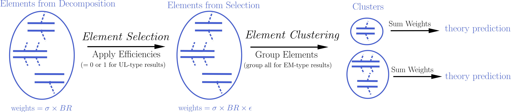
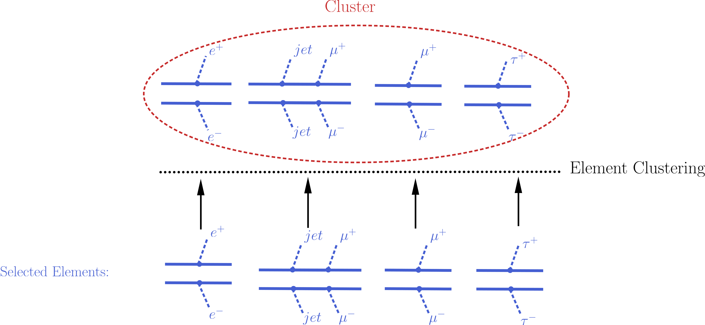

Theory Predictions¶
The decomposition of the input model as a sum of elements is the first step for confronting the model with the experimental limits. The next step consists of computing the relevant signal (or theory predictions) for comparison with the experimental limits. Below we describe the procedure for the computation of the theory predictions after the model has been decomposed.
Computing Theory Predictions¶
As discussed in Database Definitions, the SModelS database allows for two types of experimental constraints: Upper Limit constraints (see UL-type results) and Efficiency Map constraints (see EM-type results). Each of them requires different theoretical predictions to be compared against experimental data.
UL-type results constrains the weight (\(\sigma \times BR\)) of one element or sum of elements. Therefore SModelS must compute the theoretical value of \(\sigma \times BR\) summing only over the elements appearing in the respective constraint. Once this theoretical value is known, it can be compared against the respective 95% upper limit extracted from the UL map (see UL-type results).
On the other hand, EM-type results constrain the total signal (\(\sum \sigma \times BR \times \epsilon\)) in a given signal region (Data Set). Consequently, in this case SModelS must compute \(\sigma \times BR \times \epsilon\) for each element, using the efficiency maps for the corresponding Data Set. The final theoretical prediction is the sum over all elements with a non-zero value of \(\sigma \times BR \times \epsilon\). This value can then be compared with the signal upper limit for the respective data set.
Although the details of the theoretical prediction computation differ depending on the type of Experimental Result (UL-type results or EM-type results), the overall procedure is common for both type of results. Below we schematically show the main steps of the theory prediction calculation:
{kind=link}
As shown above the procedure can always be divided in two main steps: Element Selection and Element Clustering. The first step is trivial for UL-type results, but more involved for EM-type results, while the opposite is true for the clustering of elements. Once the elements have been selected and clustered, the theory prediction for each Data Set is given by the sum of all the element weights (\(\sigma \times BR \times \epsilon\)) belonging to the same cluster:
In the case of UL-type results, there might be several clusters (see Element Clustering) for a given Data Set (or Experimental Result [*]), resulting in a list of theory predictions for the corresponding Data Set. Each theory prediction must then be individually confronted with the 95% experimental upper limit obtained from the corresponding UL map.
On the other hand, EM-type results always have a single cluster for a given Data Set, since all elements (with non-zero efficiencies) contribute to the theory prediction (signal). However, EM-type results typically have several Data Sets, corresponding to distinct signal regions. Nonetheless, given a Data Set, the final theory prediction must be compared against the signal upper limit for the corresponding signal region. Notice that this upper limit depends only on the number of expected and observed events in the signal region (as well as their uncertainties) and does not depend on the input model.
By default only the best Data Set is shown for each Experimental Result. The best Data Set is the one with the largest \(\mbox{(expected signal)}/\mbox{(expected background)}\) ratio. Since UL-type results only have a single Data Set, the selection is trivial. On the other hand, for EM-type results with more than one Data Set, only the best one is selected. If the user wants to have access to all the data sets, the default behavior can be disabled using the variable useBestDataset.
Below we describe in detail the method for computing the theory predictions for each type of Experimental Result separately.
- Theory predictions are computed using the theoryPredictionsFor method
Theory Predictions for Upper Limit Results¶
In order to compute the signal cross-sections for a given UL-type result, so it can be compared against the upper limits, it is first necessary to select the elements generated by the model decomposition and then cluster them according to their masses. These two steps are described below.
Element Selection¶
An UL-type result holds upper limits for the cross-sections of an element or sum of elements. Consequently, the first step for computing the theory predictions for the corresponding analysis is to select the elements that appear in the constraint. This is conveniently done attributing to each element an efficiency equal to 1 (0) if the element appears (does not appear) in the constraint. After all the elements weights (\(\sigma \times BR\)) have been rescaled by these ‘’trivial’’ efficiencies, only the ones with non-zero weights are relevant for the analysis. The element selection is then trivially achieved by selecting all the elements with non-zero weights.
The procedure described above is illustrated graphically in the figure below for the simple example where the constraint is \([[[e^+]],[[e^-]]]\,+\,[[[\mu^+]],[[\mu^-]]]\).

- The element selection is implemented by the getElementsFrom method
Element Clustering¶
Naively one would expect that after all the elements appearing in the constraint have been selected, it is trivial to compute the theory prediction: one must simply sum up the weights (\(\sigma \times BR\)) of all the elements. However, the selected elements usually differ in their masses [†] and the experimental limit (see Upper Limit constraint) assumes that all the elements appearing in the constraint have the same mass (or mass array). As a result, the selected elements must be grouped into clusters of equal masses. When grouping the elements, however, one must allow for small mass differences, since the experimental efficiencies should not be strongly sensitive to small mass differences. For instance, assume two elements contain identical mass arrays, except for the parent masses which differ by 1 MeV. In this case it is obvious that for all experimental purposes the two elements have identical masses and should contribute to the same theory prediction (e.g. their weights should be added when computing the signal cross-section). Unfortunately there is no way to unambiguously define ‘’similar masses’’ and the definition should depend on the Experimental Result, since different results will be more or less sensitive to mass differences. SModelS uses an UL map-dependent measure of the distance between two element masses, as described in Mass Distance.
If two of the selected elements have a mass distance smaller than a maximum value (defined by maxDist), they are gouped in the same mass cluster, as illustrated by the example below:

Once all the elements have been clustered, their weights can finally be added together and compared against the experimental upper limit.
- The clustering of elements is implemented by the clusterElements method.
Mass Distance¶
As mentioned above, in order to cluster the elements it is necessary to determine whether two elements have similar masses (see element and Bracket Notation for more details on element mass). Since an absolute definition of ‘’similar masses’’ is not possible and the sensitivity to mass differences depends on the experimental result, SModelS uses an ‘’upper limit map-dependent’’ definition. For each element‘s mass array, the upper limit for the corresponding mass values is obtained from the UL map (see UL-type result). This way, each mass array is mapped to a single number (the cross-section upper limit for the experimental result). Then the distance between the two element‘s masses is simply given by the relative difference between their respective upper limits. More explicitly:
where \(M_A,M_B\) (\(x,y\)) are the mass arrays (upper limits) for the elements A and B, respectively. If the mass distance of two elements is smaller than maxDist, the two masses are considered similar.
Notice that the above definition of mass distance quantifies the experimental analysis sensitivity to mass differences, which is the relevant parameter when clustering elements. Also, a check is performed to ensure that masses with very distinct values but similar upper limits are not clustered together.
- The mass distance function is implemented by the distance method
Theory Predictions for Efficiency Map Results¶
In order to compute the signal cross-sections for a given EM-type result, so it can be compared to the signal region limits, it is first necessary to apply the efficiencies (see EM-type result) to all the elements generated by the model decomposition. Notice that typically a single EM-type result contains several signal regions (Data Sets) and there will be a set of efficiencies (or efficiency maps) for each data set. As a result, several theory predictions (one for each data set) will be computed. This procedure is similar (in nature) to the Element Selection applied in the case of an UL-type result, except that now it must be repeated for several data sets (signal regions).
After the element‘s weights have being rescaled by the corresponding efficiencies for the given data set (signal region), all of them can be grouped together in a single cluster, which will provide a single theory prediction (signal cross-section) for each Data Set. Hence the element clustering discussed below is completely trivial. On the other hand the element selection is slightly more involved than in the UL-type result case and will be discussed in more detail.
Element Selection¶
The element selection for the case of a EM-type result consists of rescaling all the elements weights by their efficiencies, according to the efficiency map of the corresponding Data Set. The efficiency for a given Data Set depends both on the element mass and on its topology and particle content. In practice the efficiencies for most of the elements will be extremely small (or zero), hence only a subset effectively contributes after the element selection [‡].
In the figure below we illustrate the element selection for the case of a EM-type result/Data Set:

If, for instance, the analysis being considered vetoes \(jets\) and \(\tau\)‘s in the final state, we will have \(\epsilon_2,\, \epsilon_4 \simeq 0\) for the example in the figure above. Nonetheless, the element selection for a Data Set is usually more inclusive than the one applied for the UL-type result, resulting in larger values for the theory prediction.
- The element selection is implemented by the getElementsFrom method
Element Clustering¶
Unlike the clustering required in the case of UL-type result (see Element Clustering for an UL analysis), after the efficiencies have been applied to the element’s weights, there is no longer the necessity to group the elements according to their masses, since the mass differences have already been accounted for by the different efficiencies. As a result, after the element selection all elements belong to a single cluster:
{kind=link}
- The (trivial) clustering of elements is implemented by the clusterElements method.
| [*] | As discussed in Database Definitions, UL-type results have a single Data Set. |
| [†] | When refering to an element mass, we mean all the intermediate state masses appearing in the element (or the element mass array). Two elements are considered to have identical masses if their mass arrays are identical (see element and Bracket Notation for more details). |
| [‡] | The number of elements passing the selection also depends on the availability of efficiency maps for the elements generated by the decomposition. Whenever there are no efficiencies available for a element, the efficiency is taken to be zero. |